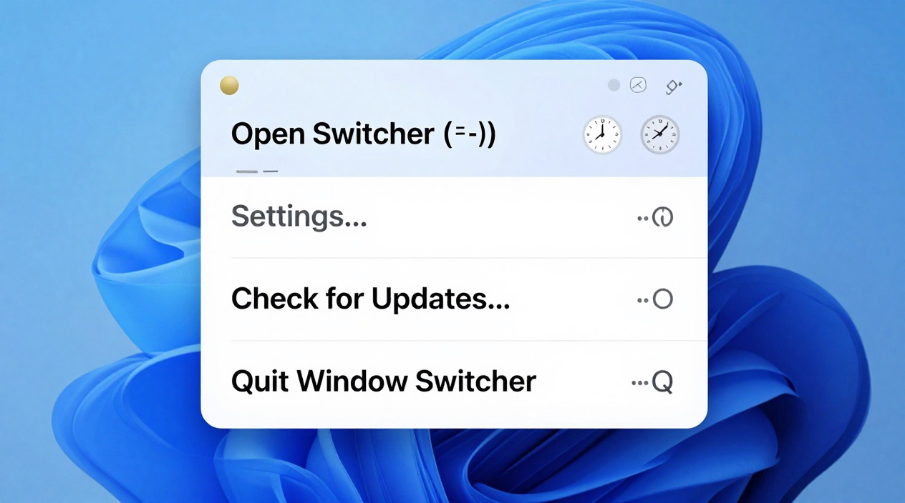
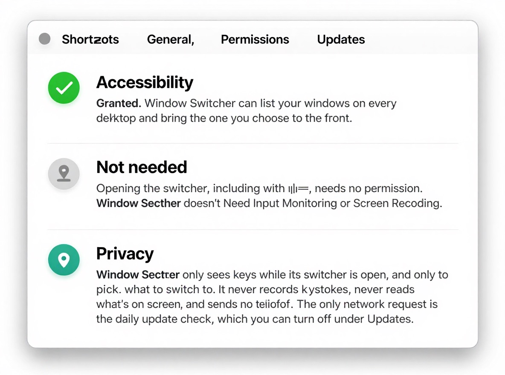
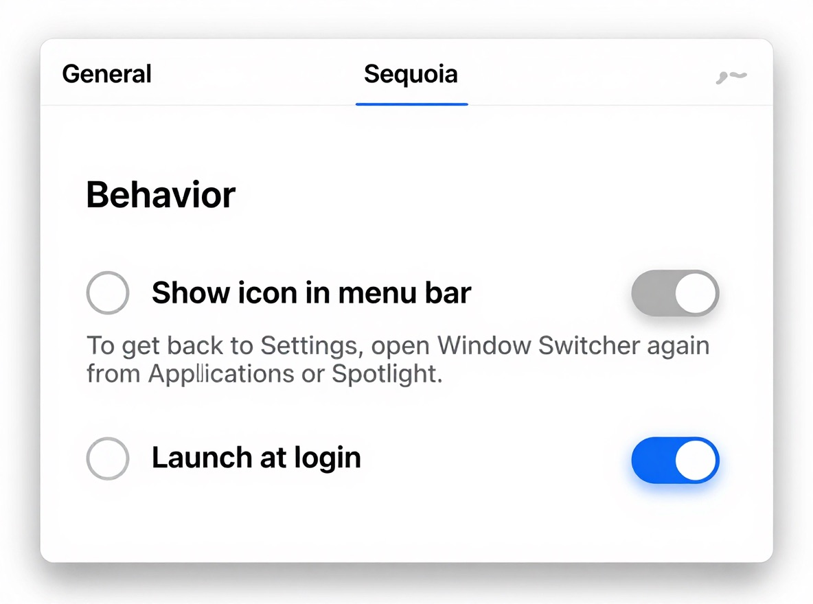
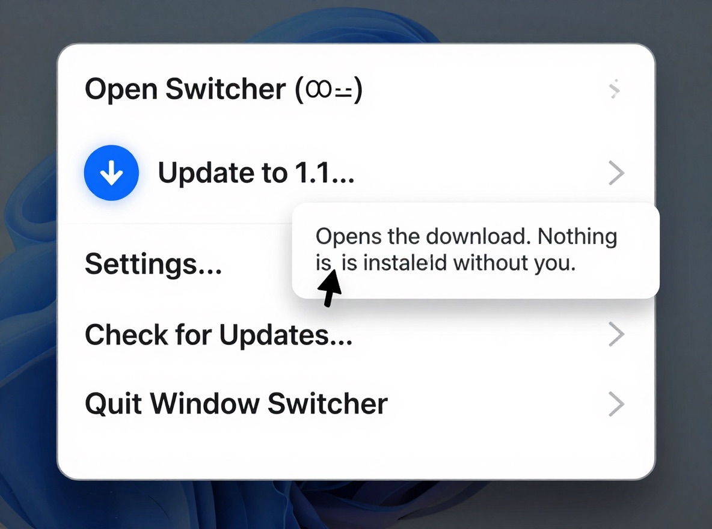

Features / Quiet in the menu bar
Quiet in the menu barNothing runs until you press ⌥⇥.
Window Switcher waits in the menu bar for one shortcut. It doesn't watch your keyboard, check your windows on a timer or send anything about you anywhere.
● No Input Monitoring. No Screen Recording

AI draft · replaceIt sleeps until you call it.
The shortcut is registered with macOS the standard way, so macOS tells Window Switcher when you press it. Until then the app does nothing at all.
- No keyboard monitoring. It only sees keys while its switcher is open, and only to pick what to switch to.
- No polling. It looks up your windows when you open it, not on a timer.
- No telemetry. Your settings stay in the app's preferences on your Mac.

AI draft · replaceHide the icon. Start at login. Forget it's there.
Once your keys are set, you may never open the menu again. Hide the icon and the shortcut still works.
- Hide the menu bar icon. To get back to Settings, open Window Switcher again from Applications or Spotlight.
- Launch at login. It's ready the first time you press ⌥⇥ after a restart.
- One permission, for windows. Accessibility lets it list and switch windows. Without it you still see and switch apps.

AI draft · replaceIt tells you about updates. You decide.
Once a day, Window Switcher asks GitHub whether a newer release exists. If there is one, the menu offers it. Nothing is downloaded until you ask, and nothing is installed by itself.
- The download opens in your browser. Replace the app in Applications and reopen it.
- Your shortcuts and settings are kept. Nothing to set up again.
- Turn the check off in Settings → Updates. Then it never contacts GitHub on its own.

AI draft · replaceSettings that change it.
In Settings → General and Settings → Updates.
Good to know.
Does it watch what I type?
No. It only sees keys while its switcher is open, and only to pick what to switch to. It never records keystrokes and doesn't need Input Monitoring.
Does it read what's on my screen?
No. It lists windows by their titles and doesn't need Screen Recording.
What does it send over the internet?
Only the daily update check, which asks GitHub for the latest release. Nothing else is sent. You can turn it off under Settings → Updates.
I hid the icon. How do I get to Settings?
Open Window Switcher again from Applications or Spotlight, and Settings opens.
Does it need an account?
No. There's no account and no sign-in. It's a free download.
Press ⌥⇥. Then the next key you want.
Free for the Mac. No account, nothing running in the background, and every app has a key the moment it's installed.
Download Window Switcher for Mac